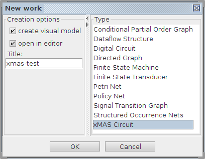
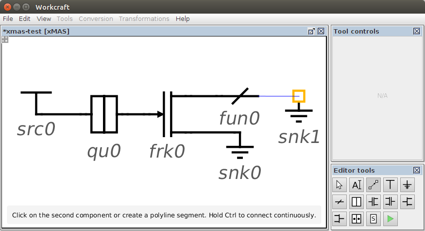
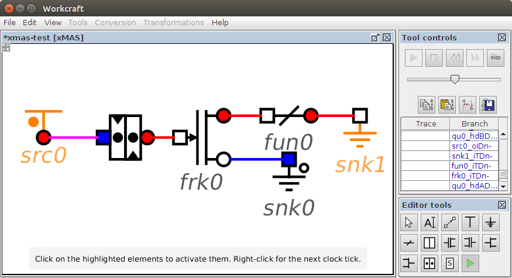
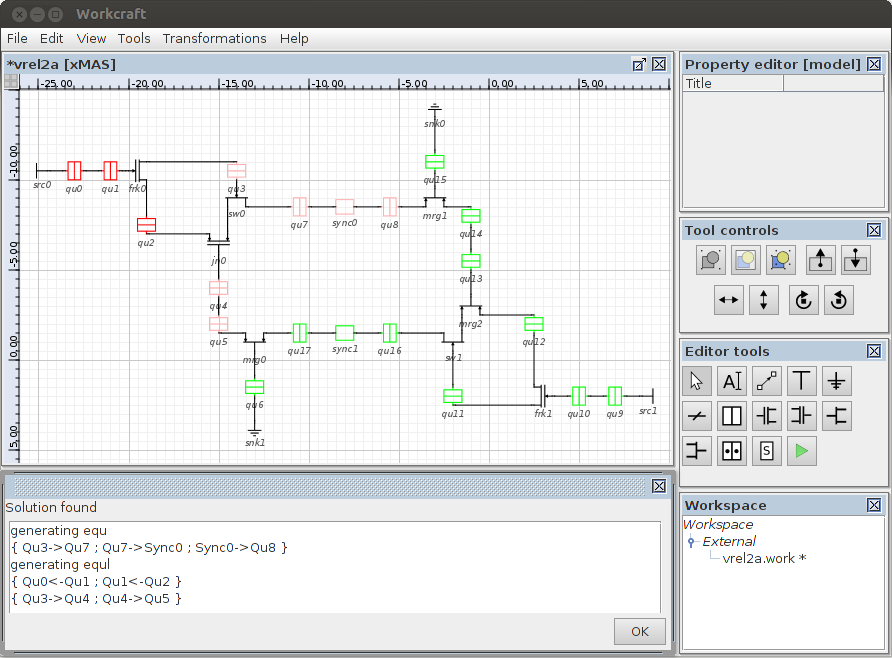

Table of Contents
xMAS Circuit plugin
Familiarise yourself with Workcraft interface to learn its common features that are available for all plugins.
This plugin is intended for capturing, simulation and verification of xMAS Circuits. It supports all the conventional xMAS components and also a specialised Sync component. For simulation an xMAS model is automatically translated into a Signal Transition Graph (STG) that allows re-using the features of the STG plugin. The verification tool supports different levels of analysis including deadlock analysis of the xMAS circuits and a relational level focussed on querying.
Capturing
In order to create an xMAS Circuit model choose File→Create work… menu item and in the New work dialogue select xMAS Circuit as the model type.

Components
The xMAS plugin supports the following different types of primitive component:
- Basic primitive components (Source, Sink, Function, Fork, Join, Merge, Switch, Queue).
- Generic synchronisation primitive component.
Select the corresponding generator tool to create components of a needed type.
Basic primitive components
The following tools are used to create the components of the xMAS circuits:
- – generator of xMAS Source components
A Source component inputs or feeds token or data values into the xMAS circuit. It can operate in one of the following ways:- Eager – always ready to send packets;
- Dead – never ready to send packets;
- Non-deterministic – randomly sends packets.
- – generator of xMAS Sink components
A Sink component is similar to the Source but it outputs or removes packets from the xMAS circuit.
- – generator of xMAS Function components
A Function component applies a function to a data value.
 – generator of xMAS Fork components
– generator of xMAS Fork components
A Fork component coordinates one input and two outputs so that a transfer only takes place when the input is ready to send and the outputs are ready to receive.
 – generator of xMAS Joint components
– generator of xMAS Joint components
A Join component coordinates two inputs and one output so that a transfer only takes place when the inputs are ready to send and the output is ready to receive.
- – generator of xMAS Merge components
A Merge component is used for modelling arbitration by selecting one packet among multiple competing packets. Its operation is Fair as a local Boolean state variable is used to ensure fairness.
 – generator of xMAS Switch component
– generator of xMAS Switch component
A Switch component is used for routing packets. It applies a Boolean switching function to a packet to select an output port.
- – generator of xMAS Queue components
A Queue component has a capacity k and is used for storage. It has one input port and one output port. It operates in FIFO (first in, first out) mode.
Generic synchronisation primitive component
The following is used to describe the synchronisation component of the xMAS model and its generator:
 – generator of xMAS Synchronisation component
– generator of xMAS Synchronisation component
A Synchronisation component is a generic 'black-box' wrapper for housing different types of synchronisation models. It incorporates a number of different synchronisation schemes:- Aynchronous;
- Mesochrononous;
- Pausible.
Connections
When the connection tool ![[C] Connect](editor_tools-connect.png "[C] Connect") is active you can connect xMAS components. Only connections from the output ports to the input ports of the xMAS components are allowed.
is active you can connect xMAS components. Only connections from the output ports to the input ports of the xMAS components are allowed.

Editing
For model editing, activate the selection tool ![[S] Select](editor_tools-select.png "[S] Select") . All the standard editing features (select, drag-and-drop, delete, copy, undo, group, etc.) work the same – see generic help on Selection controls and Property editor for details.
. All the standard editing features (select, drag-and-drop, delete, copy, undo, group, etc.) work the same – see generic help on Selection controls and Property editor for details.
Similar to all the other models, textual comments can be created by activating the ![[N] Text Note](editor_tools-text_note.png "[N] Text Note") tool and clicking the editor panel in the position you want to put the text. Double-click on the note box to edit its text label in-place or do it through the property editor panel when the note is selected.
tool and clicking the editor panel in the position you want to put the text. Double-click on the note box to edit its text label in-place or do it through the property editor panel when the note is selected.
Sync
The Sync selection tool is selected from the Tools menu. For xMAS circuits that contain synchroniser components the Sync selection tool must be used for configuration of the synchronisers prior to verification. For GALS circuits synchronisers must be present in the design model and groupings must first have been made around all the basic primitive components in the design using the Selection controls prior to configuration.
Configuration
The configuration menu is used for the sync settings. When it is selected a popup window appears which lists all of the synchronisers that are present in the design. Each of these is listed with its own configuration settings.
The configuration popup supports the following options:
- Type - set the type to asynchronous, mesochronous, etc.
- CLKF1 - set the input clock frequency.
- CLKF2 - set the output clock frequency.
Details are accepted by clicking on the OK button. The clocking frequencies are used subsequently in the verification.
Export
For exporting to Json an Export Tool can be selected from the Tools menu. Json is a language independent data interchange format. The Export tool translates the xMAS circuits consisting of basic primitives into the Json format. For GALS designs clock frequencies set using the Sync Tool are assigned to the queues in the local modules respectively. The Export tool is used prior to verification.
Generate CPN
For translating from Json to Circuit Petri nets a Generate CPN Tool is selected from the Tools menu. The Generate CPN tool translates the Json format into Control Circuit Petri nets which are subsequently used in the verification tool.
Simulation
For simulation of an xMAS Circuit model activate the simulation tool ![[M] Simulate](editor_tools-simulate.png "[M] Simulate") . The enabled components are highlighted and can be executed by clicking them. The simulation tool controls provide the means for analysis and navigation through the simulation trace, see generic help on Simulation controls for details.
. The enabled components are highlighted and can be executed by clicking them. The simulation tool controls provide the means for analysis and navigation through the simulation trace, see generic help on Simulation controls for details.

Note that simulation of an xMAS Circuit model is just an abstraction over the simulation of an automatically generated STG representation of the xMAS components.
In order to introduce priority execution of the xMAS components the following protocol with two distinct stages is adopted:
- Synchronisation stage: All the synchronous components (oracles and queues) are evaluated for the current clock cycle. When all the necessary clocked activities are complete the user should click the right mouse button in order to proceed to the communication stage.
- Communication stage: All the combinational activities of the communication components must be complete before the next clock cycle is automatically enabled and the simulator proceeds to the synchronisation stage.
Verification
Verification can be conducted on any type of xMAS circuit constructed from the primitives. For GALS circuits synchronisers must be present in the xMAS model and the synchroniser settings must also be configured first using the Sync tool. Once the CPNs are generated verification of an xMAS Circuit model is carried out by selecting the verification tool [vxm] from the Tools menu. The verification tool has various submenus for configuring and executing different levels of verification. These are outlined below.
Configuration
The configuration menu is used for applying various verification settings. Once it is selected a popup window appears listing various options.
The configuration menu supports the following options:
- Trace - set the type of trace to queue or all.
- Level - set the level of verification to normal or advanced.
- Display - set the type of output to popup or text.
- Highlight - switching this on provides highlighting in an xMAS diagram.
- Soln - number of solutions.
Verification
The verification submenu is used for initiating a verification. The output from the verification is dependent on the configuration settings that have been selected. Verification occurs by unfolding the net model to occurence nets followed by deadlock analysis. In advanced mode relational details are provided about the analysis in a verification report. An output screen showing verification in advanced mode for a GALS design is shown below.

This is accompanied with a popup screen highlighting relational details concerning the queues. An accompanying verification report is provided in the console.
Analysis
The analysis submenu is used for analysing the solutions after an advanced level verification has been made. Following an advanced level verification a number of possible unique solutions is listed. Each solution lists details of the contents of the queues occuring in the particular deadlock state.

Options exist to select one of the unique solutions that are listed. By clicking the OK button the selected solution is processed by the analyser and from a detailed analysis specific feedback is given to the user based on the configuration settings.
Query
The query submenu is used for selecting a specific type of query after an advanced level of verification has been made.
The query popup window supports the following options:
- Sources - query the origin or sources of the deadlock.
- Pt-to-pt - examines the point-to-point relational effects between pairs of queues.
- Synchroniser - this will be used to examine deadlock feedback relating to the synchronisers.
An example of the results of a query popup window relating to a Source query is shown below: